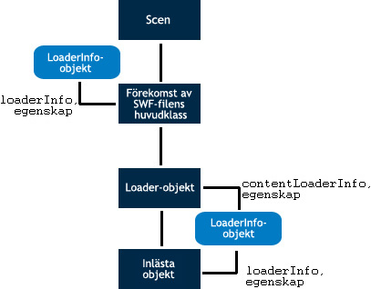

| Paket | flash.display |
| Klass | public class LoaderInfo |
| Arv | LoaderInfo |
| Språkversion: | ActionScript 3.0 |
| Körningsmiljöversioner: | AIR 1.0, Flash Player 9, Flash Lite 4 |
Du kan nå LoaderInfo-objekt på två olika sätt:
- Ett flash.display.Loader-objekts
contentLoaderInfo-egenskap –contentLoaderInfo-egenskapen finns alltid tillgänglig för alla Loader-objekt. För inläsningsobjekt som inte har anropatload()- ellerloadBytes()-metoden, eller som inte lästs in tillräckligt, som försöker gå till många av egenskaperna hoscontentLoaderInfo-egenskaperna orsakas ett fel?????. - Ett visningsobjekts
loaderInfo-egenskap.
contentLoaderInfo-egenskapen hos ett Loader-objekt lämnar information om det innehåll som inläsningsobjektet läser in under det att loaderInfo-egenskapen hos ett DisplayObject lämnar information om det visningsobjektets rot-SWF-fil.
När du använder ett Loader-objekt för att läsa in ett visningsobjekt (till exempel en SWF-fil eller en bitmapp) är loaderInfo-egenskapen hos visningsobjektet samma som contentLoaderInfo-egenskapen hos Loader-objektet (DisplayObject.loaderInfo = Loader.contentLoaderInfo). Eftersom instansen av SWF-filens huvudklass inte har något inläsningsobjekt så är loaderInfo-egenskapen den enda vägen till LoaderInfo för instansen av SWF-filens huvudklass.
Uppställningen nedan visar olika sätt att använda LoaderInfo-objektet på för instansen av SWF-filens huvudklass, för Loader-objektets contentLoaderInfo-egenskap, och för ett inläst objekts loaderInfo-egenskap:

Så länge en inläsningsoperation inte är avslutad finns några av ett inläsningsobjekts contentLoaderInfo-egenskaper inte tillgängliga. Du kan ta fram en del egenskaper, såsom bytesLoaded, bytesTotal, url, loaderURL och applicationDomain. När loaderInfo-objektet skickar init-händelsen kan du nå loaderInfo-objektets alla egenskaper och den inlästa bilden eller en SWF-fil.
Obs! Alla egenskaperna hos LoaderInfo-objekt är skrivskyddade.
Metoden EventDispatcher.dispatchEvent() är inte tillämplig för LoaderInfo-objekt. Om du anropar dispatchEvent() för ett LoaderInfo-objekt ges ett IllegalOperationError.
Relaterade API-element
flash.display.Loader.content
flash.display.DisplayObject
flash.display.DisplayObject.loaderInfo
 Dölj ärvda publika egenskaper
Dölj ärvda publika egenskaper Visa ärvda publika egenskaper
Visa ärvda publika egenskaper| Egenskap | Definieras med | ||
|---|---|---|---|
| actionScriptVersion : uint [skrivskyddad]
ActionScript-versionen av den inlästa SWF-filen. | LoaderInfo | ||
| applicationDomain : ApplicationDomain [skrivskyddad]
När en extern SWF-fil läses in, sparas alla ActionScript 3.0-definitioner som finns i den inlästa klassen i egenskapen applicationDomain. | LoaderInfo | ||
| bytes : ByteArray [skrivskyddad]
De byte som är associerade med ett LoaderInfo-objekt. | LoaderInfo | ||
| bytesLoaded : uint [skrivskyddad]
Antalet byte som är inlästa för mediet. | LoaderInfo | ||
| bytesTotal : uint [skrivskyddad]
Det totala antalet komprimerade byte i hela mediefilen. | LoaderInfo | ||
| childAllowsParent : Boolean [skrivskyddad]
Uttrycker tillförlitlighetsförhållandet mellan innehållet (underordnat) och Loader-objektet (överordnat): | LoaderInfo | ||
| childSandboxBridge : Object
Ett objekt som kan ställas in med det inlästa innehållets kod för att exponera egenskaper och metoder som kan kommas åt av kod i Loader-objektets sandlåda. | LoaderInfo | ||
 | constructor : Object
En referens till klassobjektet eller konstruktorfunktionen för en given objektinstans. | Object | |
| content : DisplayObject [skrivskyddad]
Det inlästa objekt som är associerat med LoaderInfo-objektet. | LoaderInfo | ||
| contentType : String [skrivskyddad]
Den inlästa filens MIME-typ. | LoaderInfo | ||
| frameRate : Number [skrivskyddad]
Den nominella bildrutehastighet (i bildrutor per sekund) i den inlästa SWF-filen. | LoaderInfo | ||
| height : int [skrivskyddad]
Det inlästa innehållets nominella höjd. | LoaderInfo | ||
| isURLInaccessible : Boolean [skrivskyddad]
Anger om egenskapen LoaderInfo.url har trunkerats. | LoaderInfo | ||
| loader : Loader [skrivskyddad]
Det Loader-objekt som är associerat med LoaderInfo-objektet. | LoaderInfo | ||
| loaderURL : String [skrivskyddad]
URL:en för SWF-filen som startade inläsningen av media beskrivs av det här LoaderInfo-objektet. | LoaderInfo | ||
| parameters : Object [skrivskyddad]
Ett objekt som innehåller namnvärdespar som betecknar parametrarna som skickas till den inlästa SWF-filen. | LoaderInfo | ||
| parentAllowsChild : Boolean [skrivskyddad]
Uttrycker tillförlitlighetsförhållandet mellan Loader-objektet (överordnat) och innehållet (underordnat): | LoaderInfo | ||
| parentSandboxBridge : Object
Ett objekt som kan ställas in med kod i Loader-objektets sandlåda för att exponera egenskaper och metoder som kan kommas åt av det inlästa innehållets kod. | LoaderInfo | ||
| sameDomain : Boolean [skrivskyddad]
Uttrycker domänförhållandena mellan inläsaren och innehållet: true om de tillhör samma domän, annars false. | LoaderInfo | ||
| sharedEvents : EventDispatcher [skrivskyddad]
En EventDispatcher-instans som kan användas för att utväxla händelser över säkerhetsgränser. | LoaderInfo | ||
| swfVersion : uint [skrivskyddad]
Filformatsversionen av den inlästa SWF-filen. | LoaderInfo | ||
| uncaughtErrorEvents : UncaughtErrorEvents [skrivskyddad]
Ett objekt som skickar en uncaughtError-händelse när ett ohanterat fel inträffar i koden i det här LoaderInfo-objektets SWF-fil. | LoaderInfo | ||
| url : String [skrivskyddad]
URL:en för de media som läses in. | LoaderInfo | ||
| width : int [skrivskyddad]
Det inlästa innehållets nominella bredd. | LoaderInfo | ||
| Metod | Definieras med | ||
|---|---|---|---|
| addEventListener(type:String, listener:Function, useCapture:Boolean = false, priority:int = 0, useWeakReference:Boolean = false):void
Registrerar ett händelseavlyssnarobjekt för ett EventDispatcher-objekt så att avlyssnaren får meddelanden om händelser. | EventDispatcher | |
[statisk]
Returnerar det LoaderInfo-objekt som är kopplat till en SWF-fil som är definierad som ett objekt. | LoaderInfo | ||
|
Kontrollerar om EventDispatcher-objektet har några avlyssnare registrerade för en viss typ av händelse. | EventDispatcher | |
|
Anger om det finns en egenskap angiven för ett objekt. | Object | |
|
Anger om en instans av klassen Object finns i prototypkedjan för objektet som anges som parameter. | Object | |
|
Anger om den angivna egenskapen finns och är uppräkningsbar. | Object | |
|
Tar bort en avlyssnare från EventDispatcher-objektet. | EventDispatcher | |
|
Anger tillgänglighet för en dynamisk egenskap för slingåtgärder. | Object | |
|
Returnerar det här objektets strängrepresentation, formaterad i enlighet med språkspecifika konventioner. | Object | |
|
Returnerar det angivna objektets strängbeteckning. | Object | |
|
Returnerar det angivna objektets primitiva värde. | Object | |
|
Kontrollerar om en händelseavlyssnare är registrerad för det här EventDispatcher-objektet eller något av dess överordnade objekt för den angivna händelsetypen. | EventDispatcher | |
| Händelse | Sammanfattning | Definieras med | ||
|---|---|---|---|---|
| [utsändningshändelse] Skickas när Flash Player eller AIR får operativsystemfokus och blir aktivt. | EventDispatcher | ||
| Skickas när alla data är inlästa. | LoaderInfo | |||
| [utsändningshändelse] Skickas när Flash Player eller AIR förlorar operativsystemfokus och blir inaktivt. | EventDispatcher | ||
| Skickas när en nätverksbegäran görs över HTTP, och HTTP-statuskoden kan kännas av. | LoaderInfo | |||
| Skickas när egenskaperna och metoderna för en inläst SWF-fil är tillgängliga och klara att användas. | LoaderInfo | |||
| Skickas när ett indata- eller utdatafel uppkommer och får en inläsningsoperation att misslyckas. | LoaderInfo | |||
| Skickas när en inläsning initieras. | LoaderInfo | |||
| Skickas när data tas emot under nedladdningsförloppet. | LoaderInfo | |||
| Skickas av ett LoaderInfo-objekt när ett inläst objekt tas bort med Loader-objektets unload()-metod, eller när en andra inläsning görs av samma Loader-objekt och det ursprungliga innehållet tas bort innan inläsningen börjar. | LoaderInfo | |||
actionScriptVersion | egenskap |
actionScriptVersion:uint [skrivskyddad] | Språkversion: | ActionScript 3.0 |
| Körningsmiljöversioner: | AIR 1.0, Flash Player 9, Flash Lite 4 |
ActionScript-versionen av den inlästa SWF-filen. Språkversionen specificeras med listningarna i ActionScriptVersion-klassen, såsom ActionScriptVersion.ACTIONSCRIPT2 och ActionScriptVersion.ACTIONSCRIPT3.
Obs: Denna egenskap har alltid antingen värdet ActionScriptVersion.ACTIONSCRIPT2 eller värdet ActionScriptVersion.ACTIONSCRIPT3. Både ActionScript 1.0 och 2.0 rapporteras som ActionScriptVersion.ACTIONSCRIPT2 (version 2.0). Denna egenskap skiljer bara ActionScript 1.0 och 2.0 från ActionScript 3.0.
Implementering
public function get actionScriptVersion():uintUtlöser
Error — Om filen inte lästs in tillräckligt för att ladda ned den begärda informationen.
| |
Error — Om filen inte är en SWF-fil.
|
Relaterade API-element
applicationDomain | egenskap |
applicationDomain:ApplicationDomain [skrivskyddad] | Språkversion: | ActionScript 3.0 |
| Körningsmiljöversioner: | AIR 1.0, Flash Player 9, Flash Lite 4 |
När en extern SWF-fil läses in, sparas alla ActionScript 3.0-definitioner som finns i den inlästa klassen i egenskapen applicationDomain.
All kod i en SWF-fil är definierad för att finnas i en programdomän. Den aktuella programdomänen är där huvudprogrammet körs. Systemdomänen innehåller alla programdomäner, inklusive den aktuella domänen och alla klasser som används av Flash Player eller Adobe AIR.
Alla programdomäner utom systemdomänen har en överordnad domän. Den överordnade domänen för ditt huvudprograms applicationDomain är systemdomänen. Inlästa klasser definieras bara om de inte redan är definierade av sina överordnade klasser. Du kan inte åsidosätta en inläst klassdefinition med en nyare definition.
Exempel på användning av programdomäner finns i kapitlet ”Klientsystemmiljö” i Utvecklarhandbok för Adobe ActionScript 3.0.
Implementering
public function get applicationDomain():ApplicationDomainUtlöser
SecurityError — Denna anroparsäkerhetssandlåda har inte tillgång till denna ApplicationDomain.
|
Relaterade API-element
bytes | egenskap |
bytes:ByteArray [skrivskyddad] | Språkversion: | ActionScript 3.0 |
| Körningsmiljöversioner: | AIR 1.0, Flash Player 9.0.115.0, Flash Lite 4 |
De byte som är associerade med ett LoaderInfo-objekt.
Implementering
public function get bytes():ByteArrayUtlöser
SecurityError — Om det objekt som går till denna API hindras från att gå till det inlästa objektet som en följd av säkerhetsbegränsningar. Denna situation kan exempelvis uppkomma om Loader-objekt försöker gå till sin contentLoaderInfo.content-egenskap och inte får säkerhetstillstånd att gå till det inlästa innehållet.
Mer information om säkerhet finns i avsnittet Security på Flash Player Developer Center. |
bytesLoaded | egenskap |
bytesTotal | egenskap |
bytesTotal:uint [skrivskyddad] | Språkversion: | ActionScript 3.0 |
| Körningsmiljöversioner: | AIR 1.0, Flash Player 9, Flash Lite 4 |
Det totala antalet komprimerade byte i hela mediefilen.
Innan den första progress-händelsen skickas av detta LoaderInfo-objekts motsvarande Loader-objekt är bytesTotal 0. Efter den första progress-händelsen från Loader-objektet återspeglarbytesTotal det faktiska antalet byte som laddas ned.
Obs! (endast iOS) När du kör ett program i iOS är det returnerade värdet inte detsamma som på andra plattformar.
Implementering
public function get bytesTotal():uintRelaterade API-element
childAllowsParent | egenskap |
childAllowsParent:Boolean [skrivskyddad] | Språkversion: | ActionScript 3.0 |
| Körningsmiljöversioner: | AIR 1.0, Flash Player 9, Flash Lite 4 |
Uttrycker tillförlitlighetsförhållandet mellan innehållet (underordnat) och Loader-objektet (överordnat): True om den underordnade tillåtit den överordnade åtkomst, annars false. Denna egenskap sätts till true om det underordnade objektet har anropat metoden allowDomain() för att ge den överordnade domänen tillstånd, eller om en URL-princip läses in vid den underordnade domänen, som ger den överordnade domänen tillstånd. Om underordnad och överordnad befinner sig i samma domän sätts denna egenskap till true.
Mer information om säkerhet finns i avsnittet Security på Flash Player Developer Center.
Implementering
public function get childAllowsParent():BooleanUtlöser
Error — Uppträder om filen inte lästs in tillräckligt för att ladda ned den begärda informationen.
|
childSandboxBridge | egenskap |
childSandboxBridge:Object| Körningsmiljöversioner: | AIR 1.0, Flash Player 11.4, Flash Lite 4 |
Ett objekt som kan ställas in med det inlästa innehållets kod för att exponera egenskaper och metoder som kan kommas åt av kod i Loader-objektets sandlåda. Denna sandbox bridge gör att innehåll från en icke-programdomän har begränsad tillgång till skript i programsandlådan och omvänt. Denna sandbox bridge fungerar som en brygga mellan sandlådorna och ger explicit interaktion mellan programsandlådor och icke-programsandlådor.
Implementering
public function get childSandboxBridge():Object public function set childSandboxBridge(value:Object):voidUtlöser
SecurityError — Endast innehåll i det inlästa innehållets sandlåda kan ställa in denna egenskap.
|
Relaterade API-element
content | egenskap |
content:DisplayObject [skrivskyddad] | Språkversion: | ActionScript 3.0 |
| Körningsmiljöversioner: | AIR 1.0, Flash Player 9, Flash Lite 4 |
Det inlästa objekt som är associerat med LoaderInfo-objektet.
Implementering
public function get content():DisplayObjectUtlöser
SecurityError — Om det objekt som går till denna API hindras från att gå till det inlästa objektet som en följd av säkerhetsbegränsningar. Denna situation kan exempelvis uppkomma om Loader-objekt försöker gå till sin contentLoaderInfo.content-egenskap och inte får säkerhetstillstånd att gå till det inlästa innehållet.
Mer information om säkerhet finns i avsnittet Security på Flash Player Developer Center. |
contentType | egenskap |
contentType:String [skrivskyddad] | Språkversion: | ActionScript 3.0 |
| Körningsmiljöversioner: | AIR 1.0, Flash Player 9, Flash Lite 4 |
Den inlästa filens MIME-typ. Värdet är null om inte tillräckligt av filen har lästs in för att typen ska kunna bestämmas. Giltiga värden visas i följande tabell:
"application/x-shockwave-flash""image/jpeg""image/gif""image/png"
Implementering
public function get contentType():StringframeRate | egenskap |
frameRate:Number [skrivskyddad] | Språkversion: | ActionScript 3.0 |
| Körningsmiljöversioner: | AIR 1.0, Flash Player 9, Flash Lite 4 |
Den nominella bildrutehastighet (i bildrutor per sekund) i den inlästa SWF-filen. Detta värde är för det mesta ett heltal, men det behöver inte vara det.
Detta värde kan skilja sig från den faktiska bildrutehastighet som används. Flash Player eller Adobe AIR använder bara en bildrutehastighet för alla inlästa SWF-filer vid ett och samma tillfälle, och den bildrutehastigheten bestäms av SWF-filens nominella bildrutehastighet. Dessutom kanske inte huvudbildrutehastigheten kan uppnås beroende på maskinvara, ljudsynkronisering och andra faktorer.
Implementering
public function get frameRate():NumberUtlöser
Error — Om filen inte lästs in tillräckligt för att ladda ned den begärda informationen.
| |
Error — Om filen inte är en SWF-fil.
|
height | egenskap |
height:int [skrivskyddad] | Språkversion: | ActionScript 3.0 |
| Körningsmiljöversioner: | AIR 1.0, Flash Player 9, Flash Lite 4 |
Det inlästa innehållets nominella höjd. Detta värde kan skilja sig från den faktiska höjd vid vilken innehållet visas eftersom det inlästa innehållet eller dess överordnade visningsobjekt kan skalförändras.
Implementering
public function get height():intUtlöser
Error — Om filen inte lästs in tillräckligt för att ladda ned den begärda informationen.
|
isURLInaccessible | egenskap |
isURLInaccessible:Boolean [skrivskyddad] | Språkversion: | ActionScript 3.0 |
| Körningsmiljöversioner: | Flash Player 10.1, AIR 2 |
Anger om egenskapen LoaderInfo.url har trunkerats. När värdet isURLInaccessible är true är värdet LoaderInfo.url bara domänen för den slutliga webbadress varifrån innehållet lästes in. Egenskapen är till exempel trunkerad om innehållet läses in från http://www.adobe.com/assets/hello.swf och egenskapen LoaderInfo.url har värdet http://www.adobe.com. Värdet för isURLInaccessible är bara true om alla följande påståenden stämmer:
- En HTTP-omdirigering inträffade när innehållet lästes in.
- Den SWF-fil som anropar
Loader.load()är från en annan domän än innehållets slutliga webbadress. - Den SWF-fil som anropar
Loader.load()har inte behörighet att komma åt innehållet. Behörighet för innehållet ges på samma sätt som förBitmapData.draw(): anropaSecurity.allowDomain()för att komma åt en SWF-fil (eller, för innehåll som inte finns i SWF-filer, skapa en principfil och använd egenskapenLoaderContext.checkPolicyFile).
Obs! Egenskapen isURLInaccessible har lagts till i Flash Player 10.1 och AIR 2.0, men den här egenskapen är tillgänglig för alla SWF-filer oavsett version när Flash-miljön stöder den. Om du använder vissa utvecklingsverktyg i s.k. strikt läge kan det därför orsaka ett kompileringsfel. Du kan undvika felet genom att använda den indirekta syntaxen myLoaderInfo["isURLInaccessible"] eller inaktivera strikt läge. Om du använder Flash Professional CS5 eller Flex SDK 4.1 kan du använda och kompilera detta API för körningsmiljöer som släpptes före Flash Player 10.1 och AIR 2.
För programinnehåll i AIR är värdet på den här egenskapen alltid false.
Implementering
public function get isURLInaccessible():BooleanRelaterade API-element
loader | egenskap |
loader:Loader [skrivskyddad] | Språkversion: | ActionScript 3.0 |
| Körningsmiljöversioner: | AIR 1.0, Flash Player 9, Flash Lite 4 |
Det Loader-objekt som är associerat med LoaderInfo-objektet. Om detta LoaderInfo-objekt är loaderInfo-egenskapen för instansen av SWF-filens huvudklass associeras inget Loader-objekt.
Implementering
public function get loader():LoaderUtlöser
SecurityError — Om det objekt som går till denna API hindras från att gå till Loader-objektet som en följd av säkerhetsbegränsningar. Så kan exempelvis bli fallet om en inläst SWF-fil försöker gå till sin loaderInfo.loader-egenskap och inte får säkerhetstillstånd att gå till den SWF-fil som läses in.
Mer information om säkerhet finns i avsnittet Security på Flash Player Developer Center. |
loaderURL | egenskap |
loaderURL:String [skrivskyddad] | Språkversion: | ActionScript 3.0 |
| Körningsmiljöversioner: | AIR 1.0, Flash Player 9, Flash Lite 4 |
URL:en för SWF-filen som startade inläsningen av media beskrivs av det här LoaderInfo-objektet. För instansen av SWF-filens huvudklass är denna URL samma som SWF-filens egna URL.
Implementering
public function get loaderURL():Stringparameters | egenskap |
parameters:Object [skrivskyddad] | Språkversion: | ActionScript 3.0 |
| Körningsmiljöversioner: | AIR 1.0, Flash Player 9, Flash Lite 4 |
Ett objekt som innehåller namnvärdespar som betecknar parametrarna som skickas till den inlästa SWF-filen.
Du kan använda en for-in-slinga för att hämta alla namnen och värdena från parameterobjektet.
De två parameterkällorna är: frågesträngen i huvud-SWF-filens URL och värdet på FlashVars-HTML-parametern (påverkar bara huvud-SWF-filen).
Parameteregenskapen ersätter tekniken med ActionScript 1.0 och 2.0 för att tillhandahålla SWF-filparametrar som huvudtidslinjeegenskaper.
Värdet på parameteregenskapen är null för Loader-objekt som innehåller SWF-filer som använder ActionScript 1.0 eller 2.0. Det är bara Loader-objekt som inte är null som innehåller SWF-filer som använder ActionScript 3.0.
Implementering
public function get parameters():ObjectparentAllowsChild | egenskap |
parentAllowsChild:Boolean [skrivskyddad] | Språkversion: | ActionScript 3.0 |
| Körningsmiljöversioner: | AIR 1.0, Flash Player 9, Flash Lite 4 |
Uttrycker tillförlitlighetsförhållandet mellan Loader-objektet (överordnat) och innehållet (underordnat): True om den överordnade tillåtit den underordnade åtkomst, annars false. Denna egenskap sätts till true om det överordnade objektet har anropat metoden allowDomain() för att ge den underordnade domänen tillstånd, eller om en URL-policyfil läses in vid den överordnade domänen, som ger den underordnade domänen tillstånd. Om underordnad och överordnad befinner sig i samma domän sätts denna egenskap till true.
Mer information om säkerhet finns i avsnittet Security på Flash Player Developer Center.
Implementering
public function get parentAllowsChild():BooleanUtlöser
Error — Uppträder om filen inte lästs in tillräckligt för att ladda ned den begärda informationen.
|
parentSandboxBridge | egenskap |
parentSandboxBridge:Object| Körningsmiljöversioner: | AIR 1.0, Flash Player 11.4, Flash Lite 4 |
Ett objekt som kan ställas in med kod i Loader-objektets sandlåda för att exponera egenskaper och metoder som kan kommas åt av det inlästa innehållets kod. Denna sandbox bridge gör att innehåll från en icke-programdomän har begränsad tillgång till skript i programsandlådan och omvänt. Denna sandbox bridge fungerar som en brygga mellan sandlådorna och ger explicit interaktion mellan programsandlådor och icke-programsandlådor.
Implementering
public function get parentSandboxBridge():Object public function set parentSandboxBridge(value:Object):voidUtlöser
SecurityError — Endast innehåll i Loader-objektets sandlåda kan ställa in denna egenskap.
|
Relaterade API-element
sameDomain | egenskap |
sameDomain:Boolean [skrivskyddad] | Språkversion: | ActionScript 3.0 |
| Körningsmiljöversioner: | AIR 1.0, Flash Player 9, Flash Lite 4 |
Uttrycker domänförhållandena mellan inläsaren och innehållet: true om de har samma ursprungsdomän, annars false.
Implementering
public function get sameDomain():BooleanUtlöser
Error — Uppträder om filen inte lästs in tillräckligt för att ladda ned den begärda informationen.
|
sharedEvents | egenskap |
sharedEvents:EventDispatcher [skrivskyddad] | Språkversion: | ActionScript 3.0 |
| Körningsmiljöversioner: | AIR 1.0, Flash Player 9, Flash Lite 4 |
En EventDispatcher-instans som kan användas för att utväxla händelser över säkerhetsgränser. Även när Loader-objektet och det inlästa innehållet kommer från säkerhetsdomäner som inte litar på varandra, kan båda komma åt sharedEvents och skicka och ta emot händelser via detta objekt.
Implementering
public function get sharedEvents():EventDispatcherswfVersion | egenskap |
swfVersion:uint [skrivskyddad] | Språkversion: | ActionScript 3.0 |
| Körningsmiljöversioner: | AIR 1.0, Flash Player 9, Flash Lite 4 |
Filformatsversionen av den inlästa SWF-filen. Filformatet specificeras med listning i SWFVersion-klassen, såsom SWFVersion.FLASH7 och SWFVersion.FLASH9.
Implementering
public function get swfVersion():uintUtlöser
Error — Om filen inte lästs in tillräckligt för att ladda ned den begärda informationen.
| |
Error — Om filen inte är en SWF-fil.
|
Relaterade API-element
uncaughtErrorEvents | egenskap |
uncaughtErrorEvents:UncaughtErrorEvents [skrivskyddad] | Språkversion: | ActionScript 3.0 |
| Körningsmiljöversioner: | Flash Player 10.1, AIR 2 |
Ett objekt som skickar en uncaughtError-händelse när ett ohanterat fel inträffar i koden i det här LoaderInfo-objektets SWF-fil. Ett ohanterat fel inträffar när ett fel genereras utanför try..catch-block eller när ett ErrorEvent-objekt skickas utan några registrerade avlyssnare.
Om det till exempel finns ett EventDispatcher-objekt som anropar sin händelsehanterare i ett try-block fångar catch-blocket inte felet om det genereras i händelsehanteraren. Alla fel som genereras efter detta kan fångas genom att LoaderInfo.uncaughtErrorEvents avlyssnas.
Den här egenskapen skapas när den SWF-fil som är associerad med det här LoaderInfo-objektet har lästs in helt. Tills dess är egenskapen uncaughtErrorEvents null. I ett projekt med endast ActionScript får du åtkomst till den här egenskapen under eller efter det att konstruktorfunktionen körts i huvudklassen för SWF-filen. För Flex-projekt är egenskapen uncaughtErrorEvents tillgänglig när händelsen applicationComplete har skickats.
Implementering
public function get uncaughtErrorEvents():UncaughtErrorEventsRelaterade API-element
Exempel ( Så här använder du exemplet )
uncaughtError-händelsehanterare som identifierar ohanterade fel. Det finns också en knapp som, när någon klickar på den, genererar ett fel som hanteras av hanteraren för ohanterade fel.
En avlyssnare registreras i konstruktorn för den uncaughtError-händelse som skickas av Loader-objektets uncaughtErrorEvents-egenskap.
I metoden uncaughtErrorHandler() kontrollerar koden datatypen för egenskapen error och svarar på lämpligt sätt.
package
{
import flash.display.Sprite;
import flash.events.ErrorEvent;
import flash.events.MouseEvent;
import flash.events.UncaughtErrorEvent;
public class UncaughtErrorEventExample extends Sprite
{
public function UncaughtErrorEventExample()
{
loaderInfo.uncaughtErrorEvents.addEventListener(UncaughtErrorEvent.UNCAUGHT_ERROR, uncaughtErrorHandler);
drawUI();
}
private function uncaughtErrorHandler(event:UncaughtErrorEvent):void
{
if (event.error is Error)
{
var error:Error = event.error as Error;
// do something with the error
}
else if (event.error is ErrorEvent)
{
var errorEvent:ErrorEvent = event.error as ErrorEvent;
// do something with the error
}
else
{
// a non-Error, non-ErrorEvent type was thrown and uncaught
}
}
private function drawUI():void
{
var btn:Sprite = new Sprite();
btn.graphics.clear();
btn.graphics.beginFill(0xFFCC00);
btn.graphics.drawRect(0, 0, 100, 50);
btn.graphics.endFill();
addChild(btn);
btn.addEventListener(MouseEvent.CLICK, clickHandler);
}
private function clickHandler(event:MouseEvent):void
{
throw new Error("Gak!");
}
}
}
<?xml version="1.0" encoding="utf-8"?>
<s:WindowedApplication xmlns:fx="http://ns.adobe.com/mxml/2009"
xmlns:s="library://ns.adobe.com/flex/spark"
xmlns:mx="library://ns.adobe.com/flex/halo"
applicationComplete="applicationCompleteHandler();">
<fx:Script>
<![CDATA[
import flash.events.ErrorEvent;
import flash.events.MouseEvent;
import flash.events.UncaughtErrorEvent;
private function applicationCompleteHandler():void
{
loaderInfo.uncaughtErrorEvents.addEventListener(UncaughtErrorEvent.UNCAUGHT_ERROR, uncaughtErrorHandler);
}
private function uncaughtErrorHandler(event:UncaughtErrorEvent):void
{
if (event.error is Error)
{
var error:Error = event.error as Error;
// do something with the error
}
else if (event.error is ErrorEvent)
{
var errorEvent:ErrorEvent = event.error as ErrorEvent;
// do something with the error
}
else
{
// a non-Error, non-ErrorEvent type was thrown and uncaught
}
}
private function clickHandler(event:MouseEvent):void
{
throw new Error("Gak!");
}
]]>
</fx:Script>
<s:Button label="Cause Error" click="clickHandler(event);"/>
</s:WindowedApplication>
url | egenskap |
url:String [skrivskyddad] | Språkversion: | ActionScript 3.0 |
| Körningsmiljöversioner: | AIR 1.0, Flash Player 9, Flash Lite 4 |
URL:en för de media som läses in.
Innan den första progress-händelsen skickas av detta LoaderInfo-objekts motsvarande Loader-objekt återspeglar värdet för url-egenskapen eventuellt bara den initiala URL som specificeras i anropet till Loader-objektets load()-metod. Efter den första progress-händelsen återspeglar url-egenskapen mediets slutgiltiga URL, efter lösning av eventuella omdirigeringar och relativa URL:er.
I vissa fall trunkeras värdet på egenskapen url. Läs mer om detta i avsnittet om egenskapen isURLInaccessible.
Implementering
public function get url():StringRelaterade API-element
width | egenskap |
width:int [skrivskyddad] | Språkversion: | ActionScript 3.0 |
| Körningsmiljöversioner: | AIR 1.0, Flash Player 9, Flash Lite 4 |
Det inlästa innehållets nominella bredd. Detta värde kan skilja sig från den faktiska bredd vid vilken innehållet visas eftersom det inlästa innehållet eller dess överordnade visningsobjekt kan skalförändras.
Implementering
public function get width():intUtlöser
Error — Om filen inte lästs in tillräckligt för att ladda ned den begärda informationen.
|
getLoaderInfoByDefinition | () | metod |
public static function getLoaderInfoByDefinition(object:Object):LoaderInfo| Språkversion: | ActionScript 3.0 |
| Körningsmiljöversioner: | AIR 1.0, Flash Player 9.0.115.0, Flash Lite 4 |
Returnerar det LoaderInfo-objekt som är kopplat till en SWF-fil som är definierad som ett objekt.
Parametrar
object:Object — Objektet för vilket du vill hämta ett associerat LoaderInfo-objekt.
|
LoaderInfo — Det associerade LoaderInfo-objektet. Returnerar null när en anropad icke-felsökare skapar (eller när felsökning inte är aktiverad) eller om det refererade object inte har ett associerat LoaderInfo-objekt (till exempel som vissa objekt som används i AIR-körning).
|
Utlöser
SecurityError — Anroparen körs inte i den lokala tillförlitliga sandlådan.
|
complete | Händelse |
flash.events.Eventegenskap Event.type =
flash.events.Event.COMPLETE| Språkversion: | ActionScript 3.0 |
| Körningsmiljöversioner: | AIR 1.0, Flash Player 9, Flash Lite 4 |
Skickas när alla data är inlästa. Den skickas med andra ord när allt innehåll hämtats och inläsningen avslutats. Händelsen complete skickas alltid efter init-händelsen. init-händelsen skickas när objektet finns tillgängligt, även om innehållet fortfarande håller på att hämtas.
Event.COMPLETE-konstanten definierar värdet på type-egenskapen i ett complete-händelseobjekt.
Den här händelsen har följande egenskaper:
| Egenskap | Värde |
|---|---|
bubbles | false |
cancelable | false; det finns inget standardbeteende att avbryta. |
currentTarget | Det objekt som aktivt behandlar Event-objektet med en händelseavlyssnare. |
target | Det nätverksobjekt som har lästs in. |
Relaterade API-element
httpStatus | Händelse |
flash.events.HTTPStatusEventegenskap HTTPStatusEvent.type =
flash.events.HTTPStatusEvent.HTTP_STATUS| Språkversion: | ActionScript 3.0 |
| Körningsmiljöversioner: | AIR 1.0, Flash Player 9, Flash Lite 4 |
Skickas när en nätverksbegäran görs över HTTP, och HTTP-statuskoden kan kännas av.
KonstantenHTTPStatusEvent.HTTP_STATUS definierar värdet på type-egenskapen i ett httpStatus-händelseobjekt.
Den här händelsen har följande egenskaper:
| Egenskap | Värde |
|---|---|
bubbles | false |
cancelable | false; det finns inget standardbeteende att avbryta. |
currentTarget | Det objekt som aktivt behandlar Event-objektet med en händelseavlyssnare. |
status | Den HTTP-statuskod som returneras av servern. |
target | Nätverksobjektet tar emot en HTTP-statuskod. |
Relaterade API-element
init | Händelse |
flash.events.Eventegenskap Event.type =
flash.events.Event.INIT| Språkversion: | ActionScript 3.0 |
| Körningsmiljöversioner: | AIR 1.0, Flash Player 9, Flash Lite 4 |
Skickas när egenskaperna och metoderna för en inläst SWF-fil är tillgängliga och klara att användas. Innehållet kan däremot fortfarande hålla på att hämtas. Ett LoaderInfo-objekt skickar init-händelsen när följande förutsättningar föreligger:
- Samtliga egenskaper och metoder som hör till det inlästa objektet och till LoaderInfo-objektet är tillgängliga.
- Konstruktorerna för alla underordnade objekt har slutförts.
- All ActionScript-kod i den inlästa SWF-filens huvudtidslinjes första bildruta har körts.
En Event.INIT skickas till exempel när den första bildrutan i en film eller animering har lästs in. Filmen blir då tillgänglig och kan läggas till i visningslistan. Hela filmen kan dock ta längre tid att hämta. Event.COMPLETE skickas först när hela filmen lästs in.
init-händelsen föregår alltid complete-händelsen.
Event.INIT-konstanten definierar värdet på type-egenskapen i ett init-händelseobjektet.
Den här händelsen har följande egenskaper:
| Egenskap | Värde |
|---|---|
bubbles | false |
cancelable | false; det finns inget standardbeteende att avbryta. |
currentTarget | Det objekt som aktivt behandlar Event-objektet med en händelseavlyssnare. |
target | Det LoaderInfo-objekt som är kopplat till SWF-filen som användaren läser in. |
Relaterade API-element
ioError | Händelse |
flash.events.IOErrorEventegenskap IOErrorEvent.type =
flash.events.IOErrorEvent.IO_ERROR| Språkversion: | ActionScript 3.0 |
| Körningsmiljöversioner: | AIR 1.0, Flash Player 9, Flash Lite 4 |
Skickas när ett indata- eller utdatafel uppkommer och får en inläsningsoperation att misslyckas.
Definierar värdet för ettioError-händelseobjekts type-egenskap.
Den här händelsen har följande egenskaper:
| Egenskap | Värde |
|---|---|
bubbles | false |
cancelable | false; det finns inget standardbeteende att avbryta. |
currentTarget | Det objekt som aktivt behandlar Event-objektet med en händelseavlyssnare. |
errorID | Ett referensnummer som associeras med det specifika felet (enbart AIR). |
target | Objektet är med om ett in-/utdatafel. |
text | Text som visas som felmeddelande. |
Relaterade API-element
open | Händelse |
flash.events.Eventegenskap Event.type =
flash.events.Event.OPEN| Språkversion: | ActionScript 3.0 |
| Körningsmiljöversioner: | AIR 1.0, Flash Player 9, Flash Lite 4 |
Skickas när en inläsning initieras.
Event.OPEN-konstanten definierar värdet på type-egenskapen i ett open-händelseobjekt.
Den här händelsen har följande egenskaper:
| Egenskap | Värde |
|---|---|
bubbles | false |
cancelable | false; det finns inget standardbeteende att avbryta. |
currentTarget | Det objekt som aktivt behandlar Event-objektet med en händelseavlyssnare. |
target | Det nätverksobjekt som har öppnat en anslutning. |
Relaterade API-element
progress | Händelse |
flash.events.ProgressEventegenskap ProgressEvent.type =
flash.events.ProgressEvent.PROGRESS| Språkversion: | ActionScript 3.0 |
| Körningsmiljöversioner: | AIR 1.0, Flash Player 9, Flash Lite 4 |
Skickas när data tas emot under nedladdningsförloppet.
Definierar värdet för ettprogress-händelseobjekts type-egenskap.
Den här händelsen har följande egenskaper:
| Egenskap | Värde |
|---|---|
bubbles | false |
bytesLoaded | Antalet objekt eller byte som har lästs in när avlyssnaren bearbetar händelsen. |
bytesTotal | Det totala antalet objekt eller byte som kommer att ha lästs in om inläsningen lyckas. |
cancelable | false; det finns inget standardbeteende att avbryta. |
currentTarget | Det objekt som aktivt behandlar Event-objektet med en händelseavlyssnare. |
target | Objektet rapporterar förlopp. |
Relaterade API-element
unload | Händelse |
flash.events.Eventegenskap Event.type =
flash.events.Event.UNLOAD| Språkversion: | ActionScript 3.0 |
| Körningsmiljöversioner: | AIR 1.0, Flash Player 9, Flash Lite 4 |
Skickas av ett LoaderInfo-objekt när ett inläst objekt tas bort med Loader-objektets unload()-metod, eller när en andra inläsning görs av samma Loader-objekt och det ursprungliga innehållet tas bort innan inläsningen börjar.
Event.UNLOAD-konstanten definierar värdet på type-egenskapen i ett unload-händelseobjekt.
Den här händelsen har följande egenskaper:
| Egenskap | Värde |
|---|---|
bubbles | false |
cancelable | false; det finns inget standardbeteende att avbryta. |
currentTarget | Det objekt som aktivt behandlar Event-objektet med en händelseavlyssnare. |
target | Det LoaderInfo-objekt som är kopplat till SWF-filen som användaren tar bort eller ersätter. |
Relaterade API-element
- En egenskaps-
urlskapas bestående av bildfilens plats och namn - Klasskonstruktorn skapar ett inläsningsobjekt med namnet
loader. loader-objektet instansierar en händelseavlyssnare som säkerställer att bilden läses in korrekt.- Konstruktorn skapar en ny instans av ett URLRequest-objekt,
request, med en överfördurlså att filnamnet och platsen blir kända. - Sedan överförs
request-objektet tillload()-metoden förloader-objektet, som läser in bilden till visningslistan.
Viktigt: Detta exempel kräver att du lägger in en fil med namnet Image.gif i samma katalog som den kompilerade SWF-filen. Använd en bild med ett område som passar in i huvud-SWF-filens mått.
package {
import flash.display.Loader;
import flash.display.LoaderInfo;
import flash.display.Sprite;
import flash.events.*;
import flash.net.URLRequest;
public class LoaderInfoExample extends Sprite {
private var url:String = "Image.gif";
public function LoaderInfoExample() {
var loader:Loader = new Loader();
loader.contentLoaderInfo.addEventListener(Event.INIT, initHandler);
loader.contentLoaderInfo.addEventListener(IOErrorEvent.IO_ERROR, ioErrorHandler);
var request:URLRequest = new URLRequest(url);
loader.load(request);
addChild(loader);
}
private function initHandler(event:Event):void {
var loader:Loader = Loader(event.target.loader);
var info:LoaderInfo = LoaderInfo(loader.contentLoaderInfo);
trace("initHandler: loaderURL=" + info.loaderURL + " url=" + info.url);
}
private function ioErrorHandler(event:IOErrorEvent):void {
trace("ioErrorHandler: " + event);
}
}
}
Tue Jun 12 2018, 01:40 PM Z